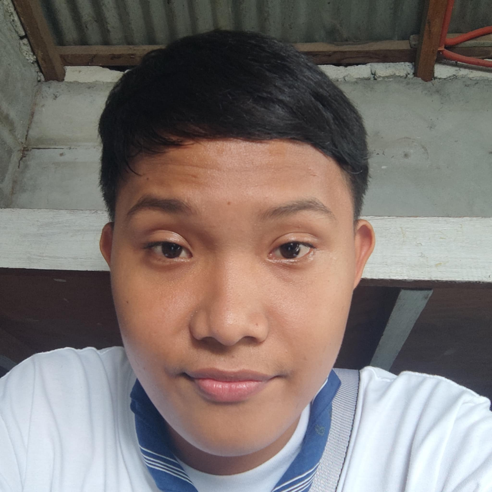

Rayjohn Lomarda Gutierrez
Background & Experience:
I am a passionate web designer with basic experience in HTML, and CSS. As a student, I have worked on various school projects, focusing on modern, user-centric, and accessible web interfaces. My experience in web designing include creating a dynamic but easy-to-navigate websites.
Reflection on My Design Process
Designing this site challenged me to balance aesthetic appeal with usability and accessibility. I focused on a consistent color theme and modern card layouts, ensuring each section feels unified and inviting. My process involves sketching layouts, prototyping in the browser, and iteratively refining based on feedback and usability checks. I believe great web design is about clarity, empathy, and continuous learning.